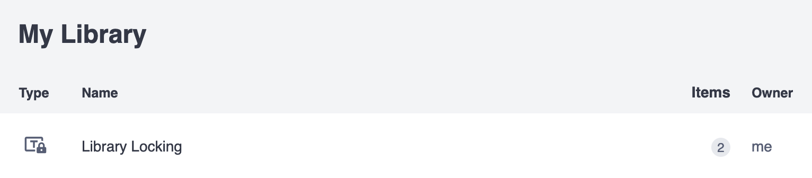
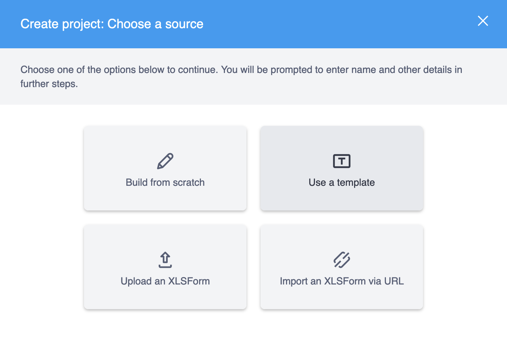
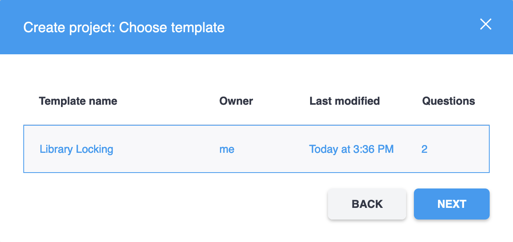
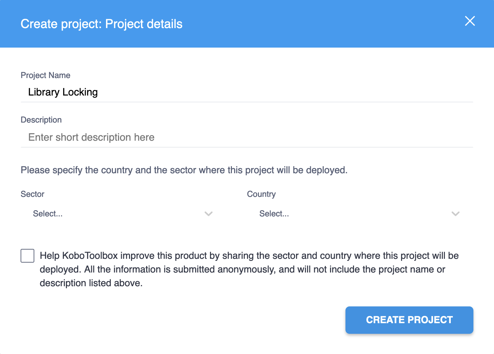
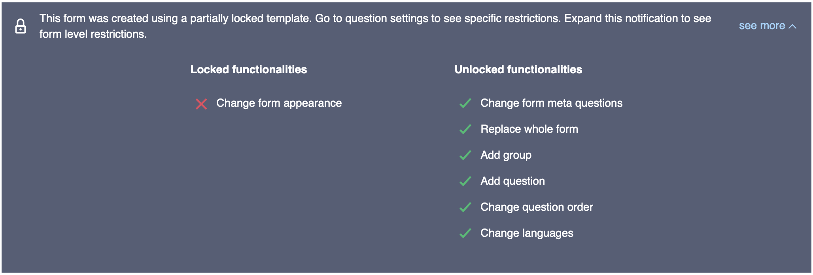
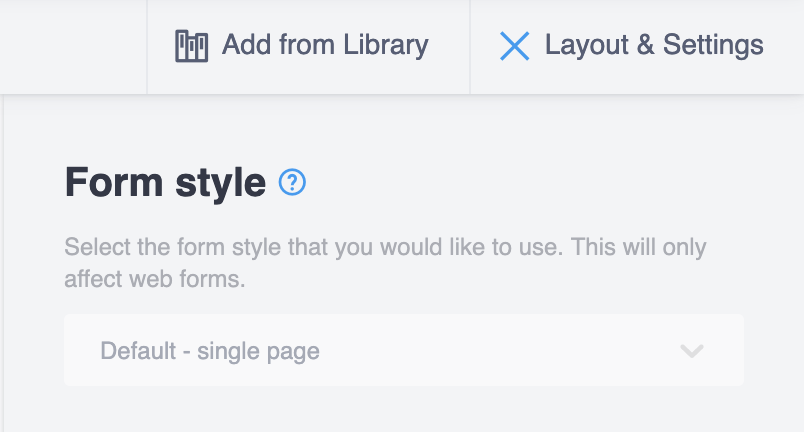

Search the knowledge base, browse our resources, and visit our forum for more detailed information
Read in English | Lire en français | Leer en español آخر تحديث: 30 سبتمبر 2025
يشير "قفل المكتبة" إلى الميزة التي تمكّن من "قفل" جوانب مختلفة من الاستبيان عند إنشائه من قالب يحتوي على سمات القفل. جميع جوانب تحرير النموذج متاحة للقفل من خلال تعيين "ملفات تعريف القفل" على مستوى النموذج أو السؤال أو المجموعة. يمكن تعيين "قيود" دقيقة لملفات تعريف القفل هذه والتي تجمع وظائف القفل معًا. بدلاً من ذلك، يمكن قفل النموذج بالكامل، مما يمنع جميع جوانب التحرير.
حاليًا، يتم دعم القفل المحدد ضمن XLSForm نفسه فقط، ولكن سيتم دمجه في أداة إنشاء النماذج في وقت ما في المستقبل.
قد تكون هذه الميزة مفيدة في بيئة فريق كبير وموزع حيث يتم استخدام قالب قياسي، مع بعض الميزات المقفلة، ويمكن لكل فريق إجراء التعديلات المحلية اللازمة لاحتياجاته. يمكن لمنشئ القالب الاستمرار في إجراء التحديثات، لكن الأقفال ستقيد التغييرات على جوانب محددة من النموذج لأولئك الذين ينشئون مشروعًا بناءً على القالب.
قفل جوانب النموذج منفصل عن إدارة أذونات المشروع.
هناك ثلاثة مستويات من القيود التي يمكن تعيينها:
بالإضافة إلى ذلك، هناك قيمة منطقية kobo--lock_all يمكن تعيينها في ورقة settings والتي ستجعل الاستبيان مقفلًا بالكامل.
kobo--lock_all¶إذا تم تعيين kobo--lock_all على True، فإن جميع القيود الدقيقة الإضافية تكون زائدة عن الحاجة حيث يكون النموذج مقفلًا بالكامل. إذا تم تعيينها على False أو تم حذفها من ورقة settings، فيمكن استخدام ملفات تعريف القفل المحددة للتحكم في سلوك القفل:
ورقة settings
kobo--lock_all |
|---|
true |
settings |
القيم المقبولة لـ kobo--lock_all هي نفسها الموجودة في ورقة survey التي
يدعمها pyxform.
لن يتم طرح خطأ إذا تم استخدام قيمة غير صالحة، فقط لن يعمل النموذج كما هو مقصود من وجهة نظر المستخدم.
لاحظ أن اسم القيد، مثل choice_add أدناه، هو
محدد مسبقًا والقيود المدرجة أدناه فقط هي خيارات صالحة.
الاسم |
الوصف |
|---|---|
|
إضافة خيارات جديدة إلى سؤال |
|
إزالة خيار موجود من سؤال |
|
تحرير |
|
تحرير |
|
إعادة ترتيب خيارات سؤال |
|
حذف سؤال معين |
|
تحرير |
|
تحرير إعدادات السؤال (بخلاف |
|
تحرير إعدادات منطق التخطي للسؤال ( |
|
تحرير إعدادات معايير التحقق من صحة السؤال ( |
الاسم |
الوصف |
|---|---|
|
زر حذف كل شيء في نافذة حذف المجموعة (أو زر حذف المجموعة إذا تم إقرانه مع |
|
زر إلغاء تجميع الأسئلة في نافذة حذف المجموعة (أو زر حذف المجموعة إذا تم إقرانه مع |
|
تحرير |
|
إضافة أو استنساخ الأسئلة داخل المجموعة المحددة (بما في ذلك المجموعات الفرعية) |
|
حذف أي سؤال من المجموعة المحددة (بما في ذلك أسئلة المجموعات الفرعية) |
|
تغيير ترتيب الأسئلة داخل المجموعة المحددة (بما في ذلك المجموعات الفرعية) |
|
تغيير جميع إعدادات المجموعة من الإعدادات للمجموعة المحددة |
|
تغيير منطق التخطي من الإعدادات للمجموعة المحددة |
الاسم |
الوصف |
|---|---|
|
تغيير مظهر النموذج من التخطيط والإعدادات |
|
استبدال النموذج باستخدام نافذة استبدال النموذج |
|
زر تجميع الأسئلة |
|
استخدام خيار إدراج تحديد متتالي وكل زر إضافة سؤال و استنساخ سؤال |
|
تغيير ترتيب أي أسئلة |
|
تحرير اللغات في نافذة الترجمات |
|
تحرير الأسئلة الوصفية من التخطيط والإعدادات |
هناك ثلاث أوراق حيث يتم تعريف وتعيين ملفات تعريف القفل: survey و settings و kobo--locking-profiles. ورقة kobo--locking-profiles غير مدعومة رسميًا بواسطة pyxform وهي خاصة بـ KoboToolbox.
يتم تعريف قيود مستوى النموذج في ورقة settings ويتم تعريف قيود مستوى السؤال والمجموعة في ورقة survey.
من داخل ورقة kobo--locking-profiles، يتم تعريف جميع ملفات تعريف القفل في بنية مصفوفة، باستخدام الكلمة الأساسية "locked" لتعيين "قيد" إلى "ملف تعريف" محدد. على سبيل المثال:
kobo--locking-profiles
حدد ملفات التعريف وعيّن لها القيود. لا يوجد حد لعدد ملفات التعريف التي يمكن تعريفها (profile_1، ...، profile_n) ولكن هناك ثلاثة ألوان فقط تميز مظهر القفل الخاص بها في أداة إنشاء النماذج.
restriction |
profile_1 |
profile_2 |
profile_3 |
|---|---|---|---|
choice_add |
locked |
||
choice_delete |
locked |
||
choice_label_edit |
locked |
||
choice_order_edit |
locked |
locked |
|
form_appearance |
locked |
||
kobo--locking-profiles |
لاحظ أنه ليس من الضروري تضمين جميع القيود الصالحة في عمود
restriction، ولكن سيتم طرح خطأ إذا تم تضمين قيد غير صالح.
ورقة settings
عيّن قيود مستوى النموذج والقيمة المنطقية kobo--lock_all.
kobo--locking-profile |
kobo--lock_all |
|---|---|
profile_3 |
false |
settings |
لاحظ أن حذف kobo--lock_all من ورقة
settings يعادل تعيينها على False.
ورقة survey
عيّن قيود مستوى السؤال والمجموعة.
type |
name |
label |
kobo--locking-profile |
|---|---|---|---|
select_one countries |
country |
Select your country |
profile_1 |
select_one cities |
city |
Select your city |
profile_2 |
survey |
ورقة choices
لا يمكن تعيين قيود في ورقة choices.
list_name |
name |
label |
|---|---|---|
countries |
canada |
Canada |
countries |
usa |
United States of America |
cities |
vancouver |
Vancouver |
cities |
toronto |
Toronto |
cities |
baltimore |
Baltimore |
cities |
boston |
Boston |
choices |
يمكن تنزيل مثال XLSForm هذا من هنا.
استورد XLSForm الخاص بك كـ template من خلال واجهة مستخدم KoboToolbox بالانتقال إلى المكتبة الخاصة بك والنقر على جديد ثم رفع. تأكد من تحديد template من القائمة المنسدلة اختر النوع المطلوب ثم استورد XLSForm الخاص بك.

سيظهر القالب المقفل الآن في عرض قائمة المكتبة الخاصة بك مع رمز قفل.

بمجرد إضافة قالب مقفل إلى مكتبتك -- إما مباشرة من خلال استيراد XLSForm كقالب، أو إنشاء قالب بناءً على استبيان مقفل أو إضافة قالب مقفل من المجموعات العامة -- يمكنك إنشاء مشروع جديد. في قسم المشاريع من واجهة المستخدم، انقر على جديد ثم استخدام قالب.

اختر القالب المقفل الذي تريد استخدامه لإنشاء المشروع الجديد.

من هناك، تابع إنشاء المشروع.

عند استخدام هذا القالب المقفل كمثال لإنشاء مشروع جديد، ستبدو أداة إنشاء النماذج كما يلي:
المناطق الرمادية هي تلك التي تم تعطيلها من خلال القيود.

سيعرض مربع حوار فوق السؤال الأول نظرة عامة على بعض قيود النموذج.

سيعرض كل سؤال يحتوي على ملفات تعريف قفل، في إعداداته، القيود التي تم تعيينها.

ستكون بعض إعدادات مستوى النموذج رمادية أيضًا.

الحالات التالية ستطرح حاليًا FormPackLibraryLockingError:
إذا كان اسم ملف تعريف القفل (رأس العمود في ورقة kobo--locking-profiles) هو "locked" (نفس الكلمة الأساسية للقفل)
إذا كان القيد المدرج في kobo--locking-profiles غير صالح (ليس في قائمة القيود المحددة مسبقًا)
إذا كانت هناك ورقة تسمى kobo--locking-profiles ولكن لا يوجد عمود restriction
إذا لم يتم تعريف ملفات تعريف القفل (رؤوس الأعمدة في ورقة kobo--locking-profiles)
سيتم توسيع التحقق من صحة ميزات قفل مكتبة XLSForm في المستقبل.
في بعض محررات جداول البيانات، يتم تحويل شرطتين مفردتين (--) تلقائيًا إلى شرطة m (—)، مما يجعل من الصعب كتابة kobo-- في خلية. لذلك نقوم بتحويل جميع حالات شرطات n و m إلى شرطتين مفردتين (عندما تكون مسبوقة بـ kobo). سيتم تحويل XLSForm باسم ورقة "kobo—locking-profiles" إلى kobo--locking-profiles وبالمثل لرؤوس الأعمدة.
هناك سمتان للأصل حيث يمكن الوصول إلى معلومات القفل وتعديلها: asset.summary و asset.content.
إذا كان kobo--locking-profile اسم عمود في ورقة survey، فسيتم إدراجه أيضًا في مصفوفة asset.summary.columns.
في asset.summary، تصف السمتان المنطقيتان التاليتان نظرة عامة على بنية قفل النموذج:
lock_all، و
lock_any
المنطق الذي يتم من خلاله تعيين كل من هذه القيم المنطقية هو كما يلي:
lock_all هي True فقط إذا تم تعيين kobo--lock_all على True في ورقة settings، وإلا فهي False
يتم تعيين lock_any على True إذا كانت أي من الحالات التالية True:
lock_all هي True،
تم تعيين kobo--locking-profile في ورقة settings، أو
تم تعيين kobo--locking-profile واحد على الأقل في ورقة survey
في المثال أعلاه، سيكون التالي موجودًا في asset.summary:
{
...,
"columns": [
...,
"kobo--locking-profile"
],
"lock_all": false,
"lock_any": true,
...
}
في asset.content، توجد سمة content.kobo--locking-profiles كمصفوفة من كائنات JSON بالبنية التالية:
[
{
"name": "profile_1",
"restrictions": [
"choice_add",
"choice_label_edit",
"choice_order_edit"
]
},
...
]
في content.settings، سيكون التالي موجودًا في كائن JSON:
{
"kobo--locking-profile": "profile_3",
"kobo--lock_all": false
}
وأخيرًا في content.survey، سيكون لكل سؤال تم تعيين ملف تعريف قفل له سمة kobo--locking-profile كما يلي:
[
{
"name": "country",
"type": "select_one",
...
"kobo--locking-profile": "profile_1"
},
{
"name": "city",
"type": "select_one",
...
"kobo--locking-profile": "profile_2"
},
...
]
من بين أنواع الأصول الأربعة (survey و template و question و block)، فقط template و survey تتعامل مع ميزات قفل المكتبة ويتم فرض الأقفال فقط على الاستبيانات. عمليًا، هذا يعني ما يلي:
افترض أنه تم استيراد XLSForm يحتوي على ميزات قفل صالحة:
إذا تم استيراده كـ block، فسيتم استبعاد و/أو إزالة جميع آثار القفل من الأصل. ينتج عن هذا أصل block سيكون مكافئًا لنفس النموذج الذي تم رفعه بدون أي ميزات قفل؛
إذا تم استيراده كـ survey (تم استيراده من خلال قسم المشاريع) أو template فستكون جميع الأقفال سليمة:
إذا، من داخل أداة إنشاء النماذج:
تمت إضافة سؤال إلى المكتبة، فسيتم إزالة جميع الأقفال من أصل question الجديد
تمت إضافة مجموعة من الأسئلة إلى المكتبة كـ block، فسيتم إزالة جميع الأقفال
إذا تم إنشاء template من أصل survey المقفل، فسيرث template جميع الأقفال التي كان لدى survey (ولكن نظرًا لأنه قالب، يمكنك تحرير المحتويات في أداة إنشاء النماذج)،
إذا تم إنشاء survey من template مقفل، فسيرث الاستبيان جميع الأقفال التي كان لدى template
نوع الأصل الأصلي |
العملية/الإجراء |
حالة |
|---|---|---|
|
استيراد ملف XLSForm لـ |
مقفل |
|
إنشاء |
مقفل |
|
إنشاء |
غير مقفل |
|
إنشاء |
غير مقفل |
|
استيراد ملف XLSForm لـ |
مقفل |
|
إنشاء |
مقفل |
|
إنشاء |
غير مقفل |
|
إنشاء |
غير مقفل |
|
استيراد ملف XLSForm لـ |
غير مقفل |
|
إضافة |
غير مقفل |
|
إضافة |
غير مقفل |
|
إنشاء |
غير مقفل |
|
استيراد ملف XLSForm لـ |
غير مقفل |
|
إضافة |
غير مقفل |
|
إضافة |
غير مقفل |
|
إنشاء |
غير مقفل |
※ هذه الإجراءات غير ممكنة في واجهة المستخدم.
kobo--lock_all¶سمة تحتوي على قيمة منطقية، يتم تعيينها في ورقة settings وتطبق جميع قيود القفل على النموذج وجميع الأسئلة والمجموعات (مما يجعل ملفات تعريف القفل الدقيقة زائدة عن الحاجة).
kobo--locking-profile¶اسم العمود في أوراق survey و settings حيث يتم تعيين ملف تعريف القفل لسؤال أو مجموعة (في survey) أو للنموذج (في settings).
kobo--locking-profiles¶اسم الورقة حيث يتم تعيين القيود لملفات التعريف.
locked¶الكلمة الأساسية المستخدمة لتعيين قيد لملف تعريف في ورقة kobo--locking-profiles.
الاسم المعين لمجموعة من القيود، المحددة في ورقة kobo--locking-profiles. يتم تعيينه للأسئلة والمجموعات في ورقة survey وللنموذج في ورقة settings.
سمة قفل دقيقة يمكن تعيينها لملف تعريف والتحكم في سلوك القفل على مستوى السؤال أو المجموعة أو النموذج.
نموذج لا يحتوي على سمات قفل.
Did you find what you were looking for? Was the information clear? Was anything missing?
Share your feedback to help us improve this article!